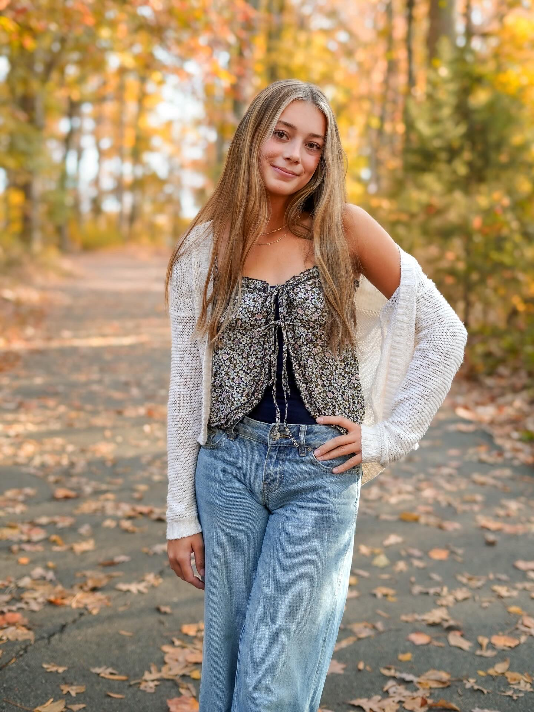

About Me
"It is so important to allow children to bloom and to be driven by their curiosity."
I am a first-year pre-nursing student with assured admission to the Bachelor of Science in Nursing program at The University of North Carolina at Chapel Hill. Along with pursuing nursing, I am interested in working with children. Through volunteering, medical internships, and my work experience, I have learned the importance of building relationships and helping others feel supported. These experiences have shaped my interest in pediatric healthcare and the kind of nurse I hope to become, which is someone who listens carefully, treats people fairly, and helps patients and families understand their care.
My love for working with children has grown through volunteering at my church's summer art camp. I began serving during the summer before my freshman year of high school and continued for 5 years after. I really value being someone they could look up to and feel comfortable around, and it became one of the most meaningful parts of serving. I got the opportunity to participate in a medical internship during high school. Visiting multiple medical facilities gave me opportunities to observe differences in caring for children and adults and to consider the roles of treatment and prevention. This internship helped me connect my interest of working with kids to healthcare and sparked my interest in patient education and how healthcare workers can support families beyond an appointment. Pediatric nursing offers me an opportunity to combine medical knowledge with the communication and relationship-building that I already enjoy.
Through my work and volunteer experiences, I have developed strong communication, organization, and problem-solving skills. At Carefree Boat Club and Saladworks, I learned to communicate with a wide variety of people, balance multiple responsibilities, and remain calm when unexpected situations arise. These roles taught me to pay attention to details while adapting to the needs of customers and coworkers. Volunteering with children has also strengthened my patience and ability to explain things clearly while helping children feel welcome and supported.
Across these experiences, I have learned to work independently, contribute to a team, and follow through on my responsibilities. My goal is to be dependable and approachable, and I will bring these qualities into my academics, relationships, and community involvement. At UNC, I want to continue to build and learn skills that will prepare me to work with children and families and overall become a nurse that will make a difference through both the care I provide and the relationships I build.

Research
The Role of Education in Preventative Pediatric Healthcare
Preventative healthcare plays an important role in supporting a child's long-term health and development, specifically through starting intervention and family-centered care early on. I am interested in exploring how promoting parent-focused education programscan help to prevent behavioral and emotional difficulties in young children. Through this research, I hope to better understand how pediatric nurses can work alongside families to encourage healthy parenting practices, recognize early signs of developmental or mental health concerns, and provide preventative care that supports children's overall well-being.
Academic Resume
View my resume (PDF)Education
University of Chapel Hill – Chapel Hill, NC (August 2026 - May 2030) Bachelor of Science in Nursing
Liberty Preparatory Christian Academy – Mooresville, NC (August 2022 - May 2026)
- HOSA (Health Occupations Students of America), Aug 2022, May 2026
- National Honors Society, Aug. 2023-May 2026
Work Experience
Saladworks | Assistant Manager | Huntersville, May 2023 - May 2026
Carefree Boat Club | Dock Hand | Cornelis, January 2024 - Present
Novanta 90 | Hostess | Mooresville, June. 2025 - October. 2025
- Worked as a cashier, shift lead, kitchen staff member, and assistant manager, providing friendly customer service, accurately preparing orders, and maintaining an organized environment. Demonstrated teamwork, attention to detail, dependability, and composure in a fast-paced setting.
- Provided friendly, professional service to club members and guests while managing multiple responsibilities and maintaining a welcoming environment. Demonstrated clear communication, teamwork, attention to detail, and calm problem-solving, with reliability proven through three years of consistent employment.
- Efficiently seated guests, provided friendly customer service, and resolved issues over the phone.
Leadership and Service
Student Ambassador, Liberty Prep, Aug. 2024 - May 2026
Lake Forest Art Camp, Lake Forest Church, June 2025 - Present
- Led a group of children during a weeklong summer program, assisted with activities, and fostered a welcoming environment. Collaborated with staff and volunteers while demonstrating patience, responsibility, and strong communication skills.
Skills and Certifications
Assured Admissions at Carolina Nursing
Cross Country – Coaches Award, Most Improved
All-A Honor Roll
CPR/AED for Healthcare Providers, American Heart Association - April 2026
A good designer has a lot in common with a good researcher. Both hunt for excellence and perfection. And you have to really focus on the details, and you don't really know what the final result will be before you have it.
Connect with me to learn more about my experience and professional interests.
Visit my LinkedIn